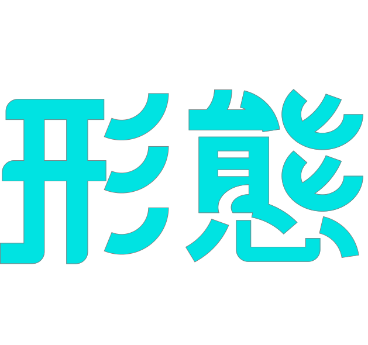
형태
컬러
Color
MEANING
익숙함에서
발견한 형태
발견한 형태
한국에서 자라며 가장 자주 보고 들어온 동물들이 있다. 시장 좌판의 잉어, 여름밤 마당의 두꺼비. 너무 가까워서 오히려 자세히 본 적 없는 형태들이다. 이 작업은 그 익숙함을 한 번 더 들여다보고, 동물의 본질적인 형태만 남기는 데서 출발한다. 동물마다 가장 두드러진 도형 두세 개로 압축했다. 잉어의 둥글게 말린 몸과 빨강·흰색의 분할, 두꺼비의 둥근 덩어리와 길게 뻗은 혀. 단순화된 형태와 컬러풀한 배색이 만나는 자리에서, 우연과 계획이 함께 만든 새로운 인상을 만들어보고자 했다.
Observation
관찰에서
형태로
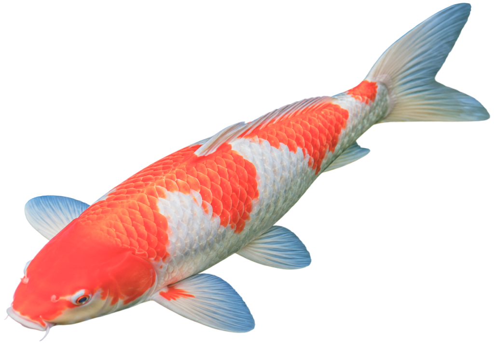
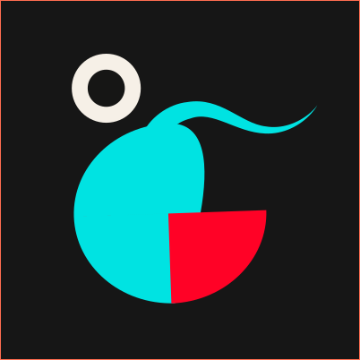
머리에서 꼬리까지 이어지는 선이 S자도, 일직선도 아닌, 어딘가 안으로 말려드는 곡선이었다.
비늘은 도형이었다. 반원의 집합. 한 개 한 개는 작은 부채꼴인데, 그게 규칙적으로 겹쳐지면서 비로소 ‘물고기’가 된다. 비늘 하나를 따로 떼어놓으면 그냥 도형이지만, 그게 수백 개가 이어지면 움직임이 생긴다. 눈이 그 패턴을 따라가며 몸통의 방향을 읽기 시작한다.
비늘은 도형이었다. 반원의 집합. 한 개 한 개는 작은 부채꼴인데, 그게 규칙적으로 겹쳐지면서 비로소 ‘물고기’가 된다. 비늘 하나를 따로 떼어놓으면 그냥 도형이지만, 그게 수백 개가 이어지면 움직임이 생긴다. 눈이 그 패턴을 따라가며 몸통의 방향을 읽기 시작한다.
잉어/두꺼비
원형의 회전감 안에
수직 분할이 끼어든다.
수직 분할이 끼어든다.
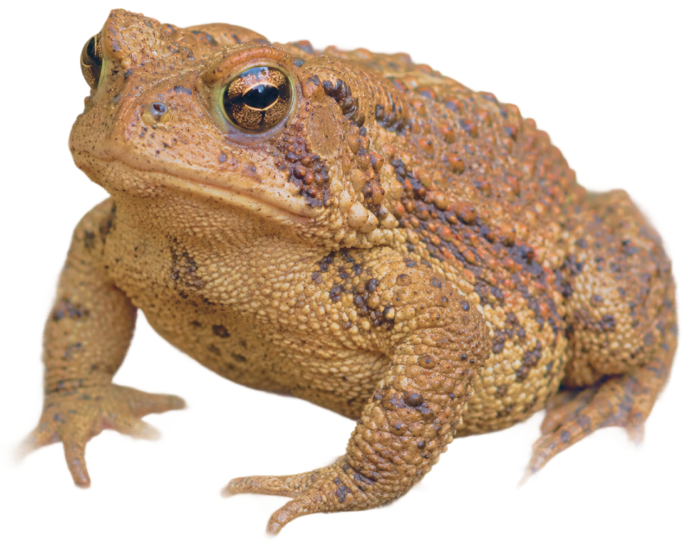
앞쪽은 낮고 뒤쪽으로 갈수록 높아지는 형태. 마치 돌이 한쪽으로 부풀어 오른 것처럼.
피부가 독특했다. 매끄럽지 않다. 작은 돌기들이 온몸을 덮고 있는데, 그 크기와 모양이 전부 달랐다. 어떤 건 작고 뾰족하고, 어떤 건 크고 둥글었다. 눈 자체가 머리 꼭대기에 붙어 있어서, 몸통 위에 두 개의 반구가 올라앉아 있는 것처럼 보였다. 눈이 얼굴이 아니라 등에서 자란 것 같은 느낌.
피부가 독특했다. 매끄럽지 않다. 작은 돌기들이 온몸을 덮고 있는데, 그 크기와 모양이 전부 달랐다. 어떤 건 작고 뾰족하고, 어떤 건 크고 둥글었다. 눈 자체가 머리 꼭대기에 붙어 있어서, 몸통 위에 두 개의 반구가 올라앉아 있는 것처럼 보였다. 눈이 얼굴이 아니라 등에서 자란 것 같은 느낌.
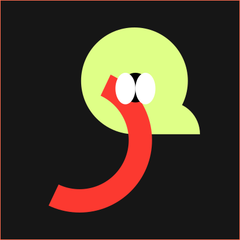
Elements
형태 발견
요소
요소
Carp
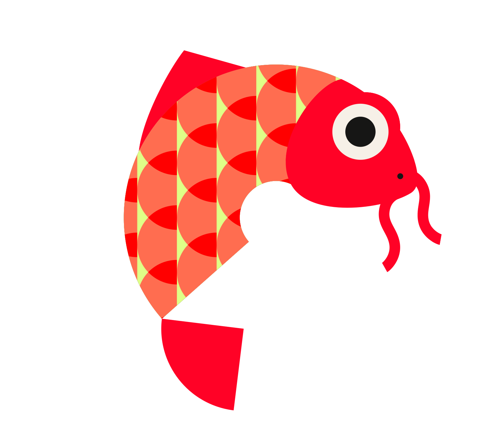
두 동물을 만든 형태 단위를 분해한다. 각 요소는 개별로 보면 단순한 도형이지만, 조합되었을 때 동물이 된다. 곡선을 변형한 것, 계란 후라이 흑백버전, 반원의 한 쪽 꼭짓점을 둥글게 만든 형태들을 조합해보니 잉어와 같은 모양이 나왔고, 원과 반원, 두께가 있는 호의 모양만 있을 땐 아무것도 보이지 않았지만 타원 세 개를 붙인 파리와 같은 모양을 얹으니 두꺼비 느낌이 났다.
Toad
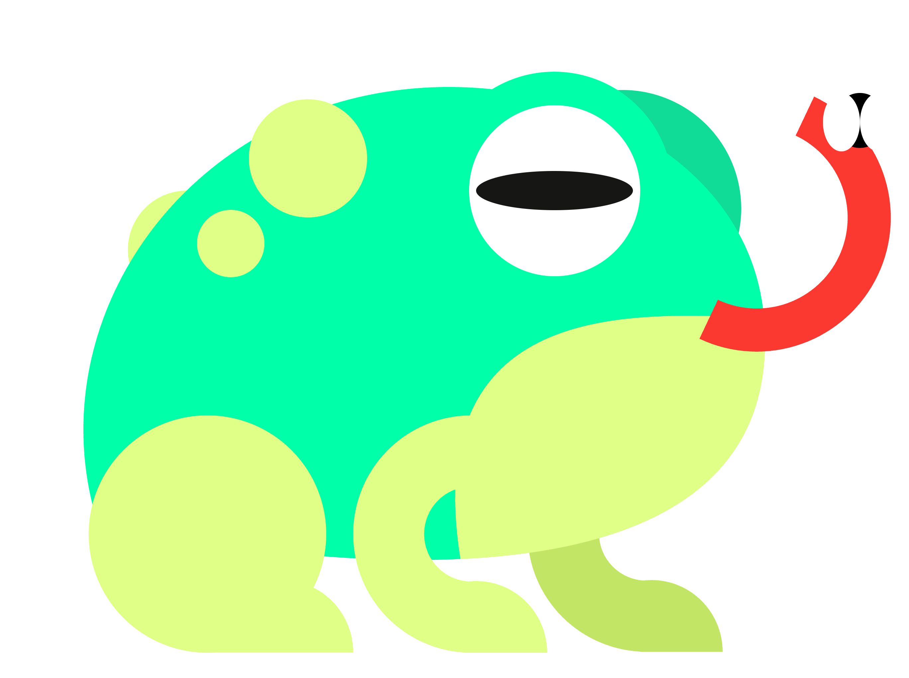
두 동물을 만든 형태 단위를 분해한다. 각 요소는 개별로 보면 단순한 도형이지만, 조합되었을 때 동물이 된다. 곡선을 변형한 것, 계란 후라이 흑백버전, 반원의 한 쪽 꼭짓점을 둥글게 만든 형태들을 조합해보니 잉어와 같은 모양이 나왔고, 원과 반원, 두께가 있는 호의 모양만 있을 땐 아무것도 보이지 않았지만 타원 세 개를 붙인 파리와 같은 모양을 얹으니 두꺼비 느낌이 났다.
COLOR
배색 적용
잉어
두꺼비
Typography
한자를
다시 쓰다
다시 쓰다
기존 한자는 획의 끝이 날카롭고 구조적이다. 잘 만들어진 글자지만, 잉어의 부드러운 몸선, 두꺼비의 둥글게 눌린 덩어리와는 전혀 다른 언어였다. 포스터 안에서 그림과 글자가 따로 놀았다. 그래서 직접 만들기로 했다. 원칙은 하나 — 모서리를 전부 없앤다. 획이 꺾이는 자리, 시작하는 자리, 끝나는 자리. 날카로운 끝을 모두 원호로 대체했다. 하나씩 다듬을수록 글자가 생물처럼 바뀌었다. 딱딱한 한자가 물렁물렁해졌다.
(水 — 물)
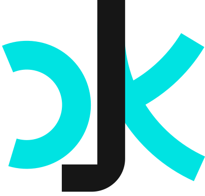
(地 — 땅)
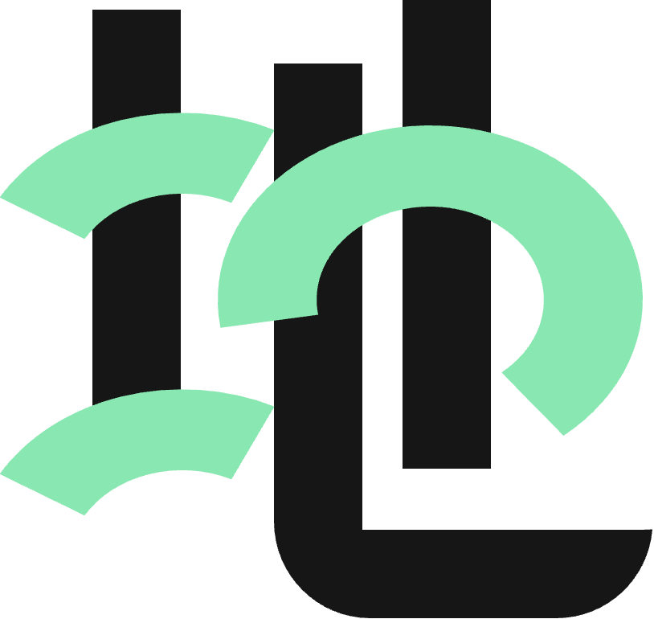
Series
수지 — 水地
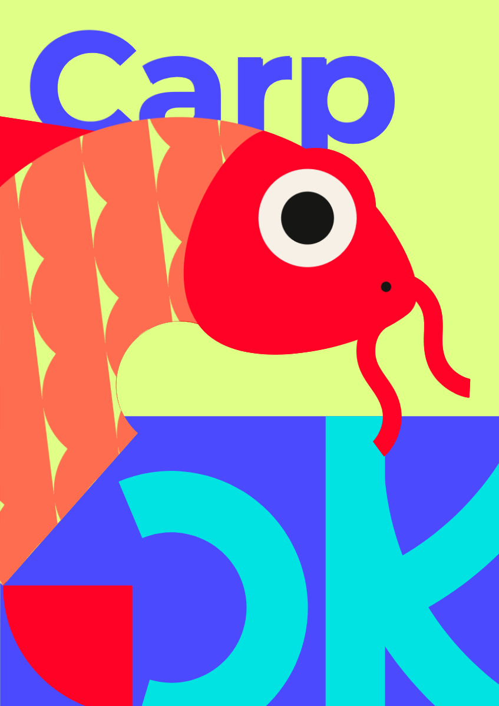
Poster 01 / Series 水地
SU — 잉어
물이 깎아낸 둥근 형태. 한 음절의 메시지가 한 마리의 동물을 정의한다. SU 타이포가 잉어와 겹치며 형태와 글자가 서로의 일부가 된다.
Form
원형 회전 + 수직 분할
Color
Red / White / Lime / Blue
Meaning
水 — 물 / 흐름 / 역동
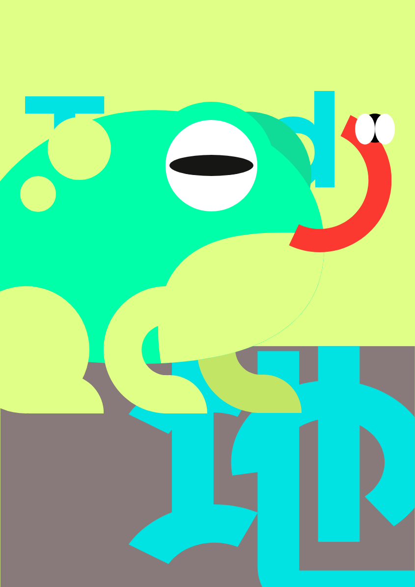
Poster 02 / Series 水地
JI ㅡ 두꺼비
땅에 붙어 살아온 둥근 덩어리. 큰 형태와 작은 점, 정적인 몸과 길게 뻗는 혀 그리고 그 위에 파리가 한 장면 안에서 부딪힌다.
Form
타원 덩어리 + 뻗는 혀
Color
Mint / Lime / Cyan / Gray
Meaning
地 — 땅 / 무게 / 정적
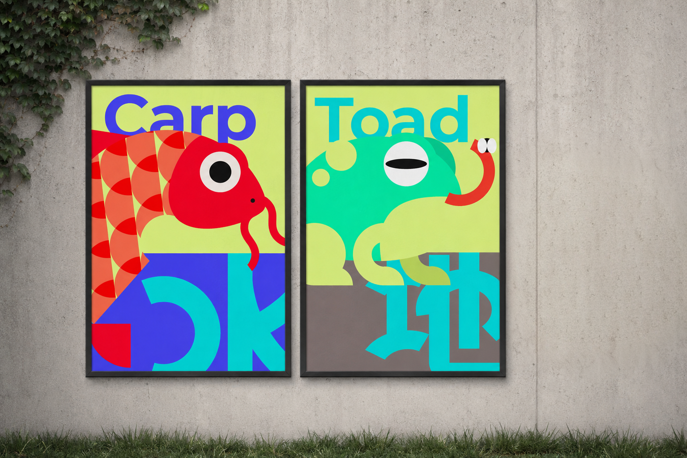